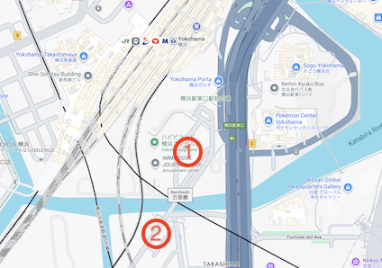
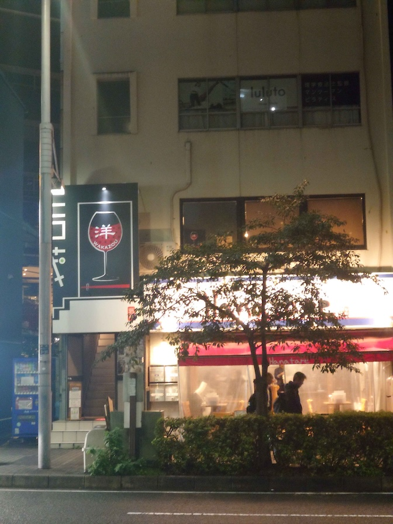
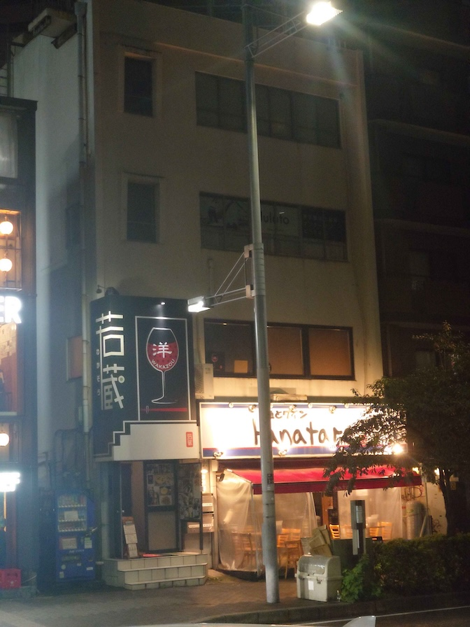
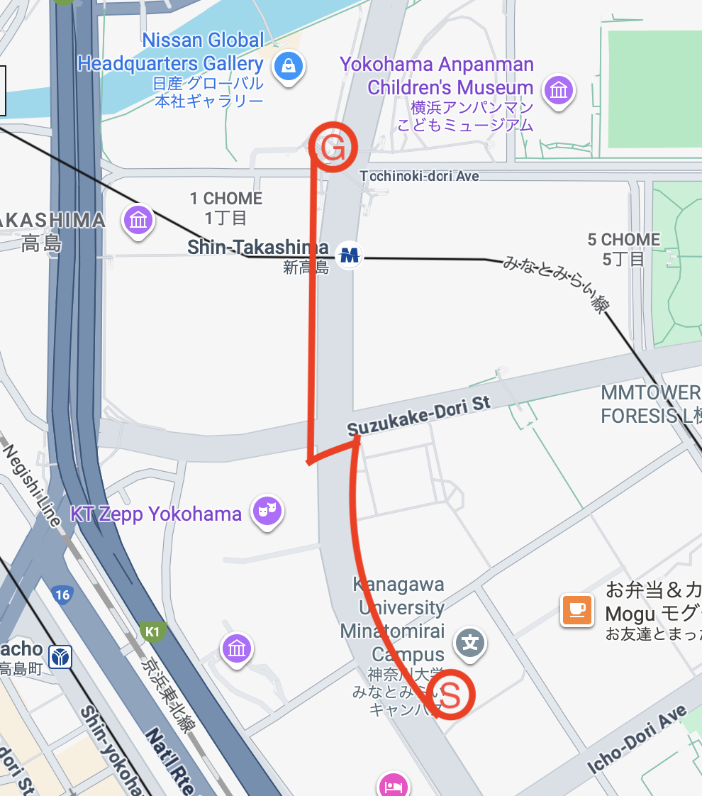
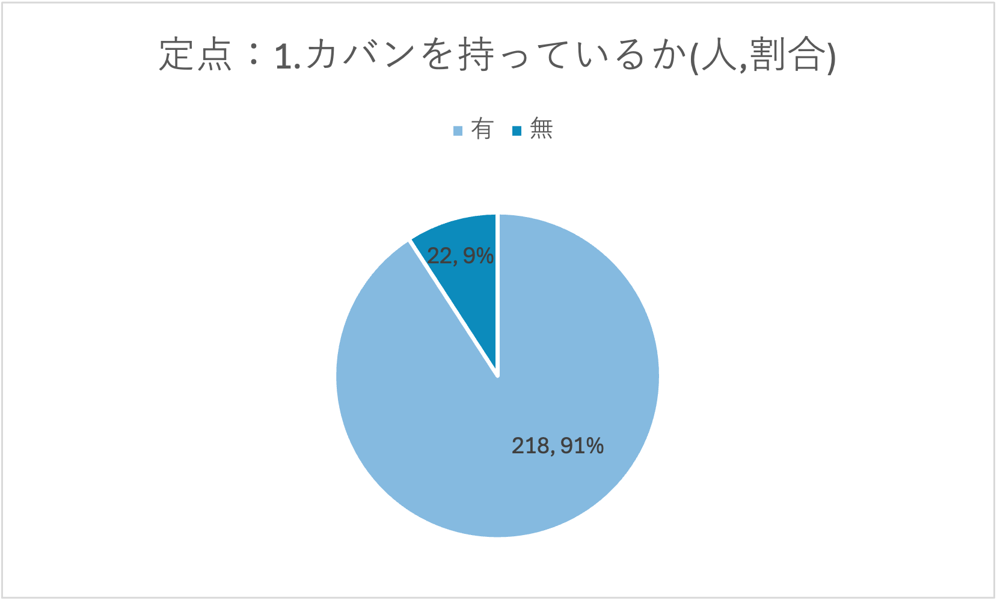
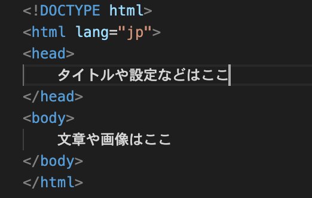

画像を使っているde12のページ（路上観察・路上調査・htmlの基礎知識）から代表的な画像を集め、
de56の新デザインでどう表示されるかをまとめたテストページです。
CSSでは max-width: 100%・border-radius: 4px・border: 1px solid のみを指定し、
影（box-shadow）やホバー拡大などの装飾は使っていません。
記事幅いっぱいの写真1枚と、2枚並べた比較写真の例です。

高島エリアの散策マップ（元ページでは幅40%指定だったものを記事幅いっぱいに変更）

洋食居酒屋の看板（正面）

洋食居酒屋の看板（側面）
グラフ画像を2枚並べた例です。図が小さくても枠線と角丸だけで十分見やすくなります。

移動ルート地図

定点調査：カバンを持っているか
もとのページで幅40%指定だった説明図です。small指定でも枠線でしまって見えます。

head / body の説明図（元は width="40%" 指定）